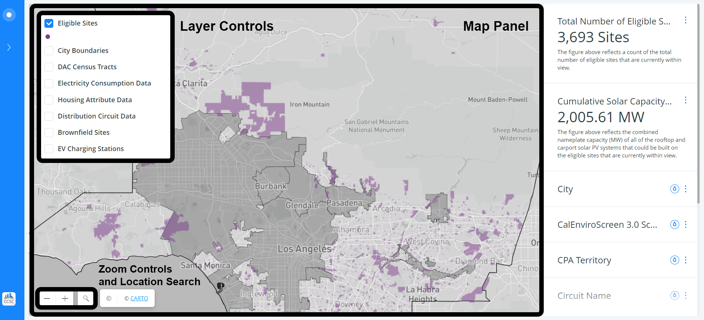
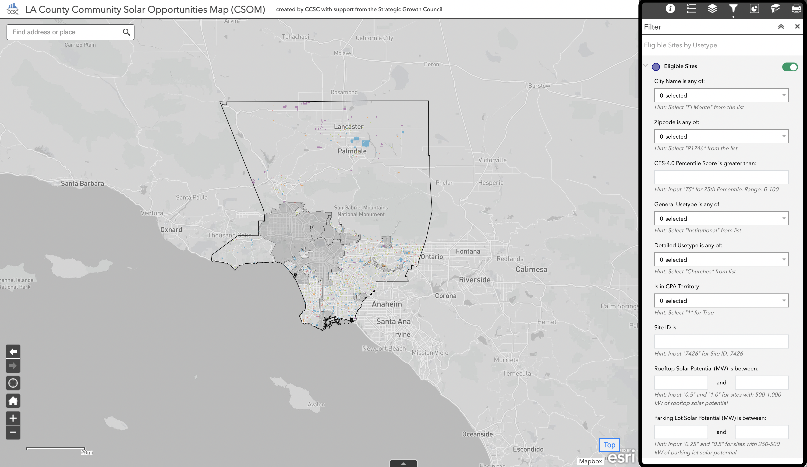

Overview
When v2.0 of the solar opportunity tool loads, two elements appear on the screen: a map panel and a filter panel (right side). A custom basemap has been developed using Mapbox which highlights the administrative boundary of Los Angeles County, grays out the service territory of LADWP 1 and restricts reference annotation text elements to only those geographic points of interest most relevant to this project.

After the solar opportunity map loads, the map is divided into two panels.
- A Map Panel
- A Filter Panel
Map Panel
Within the map panel there are a series of interactive elements which can be used to explore different sources of geographic information as well as adjust the zoom level or search for geographic locations of interest. These elements are highlighted in the following image.
Filter Panel
Within the filter panel are interactive selection tools that allow users to iteratively apply filters to the layer of eligible sites. The CARTO web map service refers to these tools as "widgets." For our purposes, we refer to them as filters. These filters range from histograms, to categorical identity filters, to binary conditions. The features and suggested patterns of use of these tools are discussed in later sections.
Think of the filters as building blocks. They can be combined to meet the requirements of your site selection. Each "Get Started" example on the Solar Map page gives an example of suggested use for each filter.
Metadata Links
In addition to these map controls and the filter panels the app also has links to important metadata - such as the location of this page, as well as the CCSC CARTO profile. These links are highlighted in the screenshot below.

Available Map Layers
Eligible Sites
Using the layer selection controls, the user can easily toggle on or off different geographic data layers. The primary layer, whose attributes are linked to all of the interactive selection filters, is titled "Eligible Sites" within the layer control panel. This layer corresponds to institutional sites considered eligible for potential selection for the location of a community scale solar PV generation system that could potentially be used as the anchor location for a virtual net metering program. A detailed discussion of how these sites were selected and their corresponding attributes were calculated is provided in the following methodology section. By default these sites are color coded according to the estimated combined solar nameplate capacity potential from the available on-site rooftop and parking lot carport areas (MW-AC).
City Boundaries
Two boundary layers are included to provide geographic context for the focused search for eligible sites within a particular region of interest. The first of these is titled "City Boundaries" and contains the borders of Los Angeles County's 88 cities as well as in unincorporated areas.
Circuit Group Data
In addition to the two previous boundary layers, two additional sources of contextual information are provided in the map panel. The first of these corresponds to collections of Census Block Groups which are described by the title "Circuit Groups." According to the methodology used to develop this analysis, a circuit group is a collection of census block groups which are associated with the same distribution circuit - with associations determined on the basis of geographic proximity. These circuit groups reflect the most granular spatial unit at which residential energy consumption data, sourced from the UCLA Energy Atlas, have been aggregated to generate estimates of annual electricity use per capita and per household throughout the region. Illustrated in this layer, are estimates of the total annual electricity consumption per renter household within each circuit group (kWh/year).
Block Group Data
The block group layer plots the percentage of the population that are renters within each Block Group in Los Angeles County. This information provides useful context to the energy consumption per household data described previously for the circuit groups and can be useful for identifying, at the macro scale, cities or zip codes that should be focus areas for the exploration of eligible sites.
Brownfield Sites
Point locations of Brownfield Property sites within Los Angeles County are provided as an additional contextual layer.
EV Charging Stations
Additionally, point locations of Electric Vehicle Charging Stations are provided as a contextual layer. EV Charging Stations displays stations in three categories: public, private and other. Information like charging time availability, network, and pricing is available when a site is clicked on the map.
Using the Map
How to zoom in
Zoom into the map using the + and - controls in the bottom left corner of the tool. As you zoom into the map the count of eligible sites decreases. Zooming in on the map filters the data, which is reflected in the eligible site count, cumulative solar capacity, and histogram filters.
Using a filter
To open a filter, hover your cursor over the three vertical dots and click the green "Toggle Widget" switch. CARTO calls these filters "Widgets." For our purposes, they make more sense to be described as filters.

Think of the different filters on the sidebar as building blocks. They can be combined and explored based on your custom requirements for selecting a site.
Applying color style to eligible sites
Each filter has the option to apply a color style. Color styles are helpful to identify how sites compare to each other with respect to the numeric values available in the histogram filters. Click the water droplet on the left side of any filter and an auto style will be applied to the Eligible Site layer.

Category filter versus histogram filters
Category filters allow you to filter eligible sites based on data-defined categories. For example: city, zip code, and circuit name. To use a category filter: open the filter and click on a category OR search for a category, click the check box, and click apply.
Histogram filters show the distribution of a numerical data source across the eligible sites. For example: 15% Penetration Capacity, CalEnviroScreen 3.0 Scores, and Combined Capacity Potential.

Troubleshooting
Filter timed out
Occasionally, if the tool has been open in your browser for an extended period of time, a filter will time out. A refresh button becomes available in the top left corner of the filter. Click refresh to resolve.
No Data Available
When you use a histogram type filter and click on the graph to make a range selection, on the first click before you drag the range selector bars, you might accidentally make a selection that doesn’t include any sites. This will look like all other filters graying out and displaying a message that no data is available.
To solve this, scroll back to the histogram filter you had just clicked. Drag the selector bars on the histogram apart until they are selecting sites.

Refreshing or Clearing filters to start over
To remove all filtering from the map, each filter needs to be cleared separately. For a histogram filter, click "Clear." For a category filter, click 'All' or 'Unlock' depending on if you have clicked a category or searched for a category.